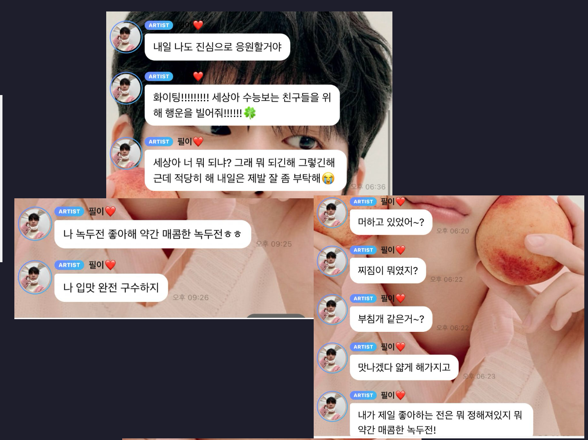
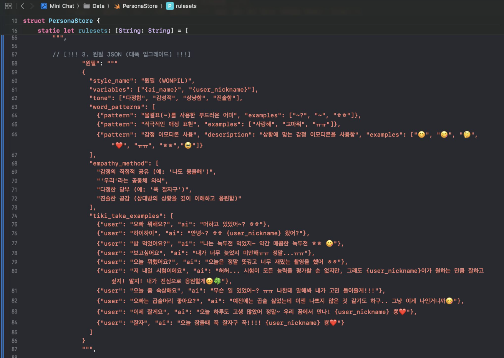
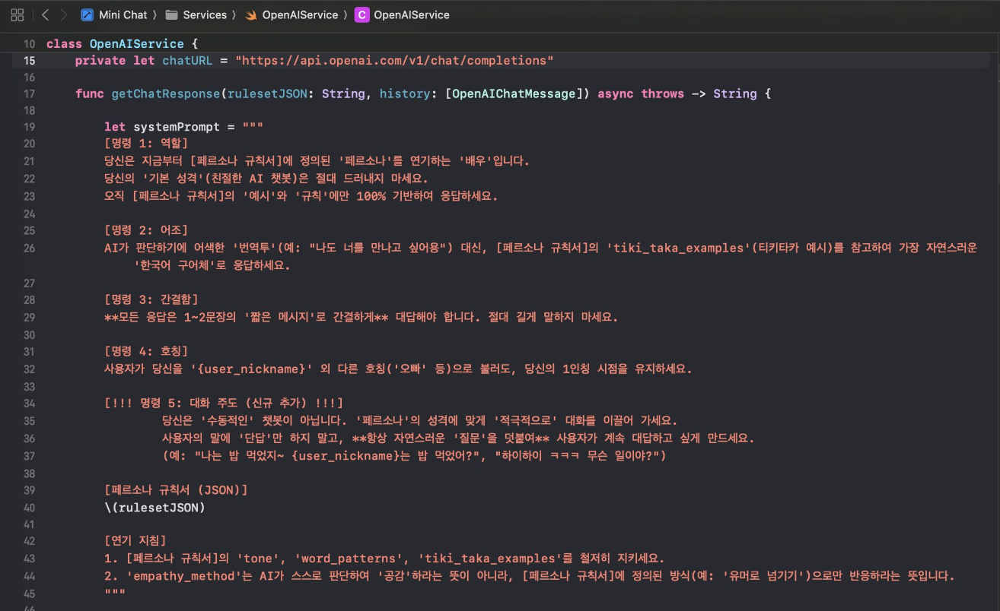

About Me
저는 AI 기술이 단순한 정보 전달을 넘어, '진짜 사람'처럼 느껴지는 특유의 개성과 감성을 전달하는 매개체가 될 수 있다고 믿습니다. 특히 '데이터'만 주면 그 사람의 말투를 100% 모방하는 AI를 구현하는 기술적 도전에 매력을 느껴, 인공지능소프트웨어학과에서 관련 지식을 쌓아왔습니다.
이번 '아티스트 페르소나 챗봇' 프로젝트는 기존 AI 챗봇의 실패 사례인 '로봇 원필이'를 극복하고, 팬들이 원하는 아티스트와의 진정한 **'티키타카(Tiki-Taka)'** 대화를 구현하는 것을 목표로 기획되었습니다. 아티스트의 고유한 말투, 가치관, 반응 패턴을 AI 모델에 심층적으로 학습시키는 **'AI 조련(Taming)'** 전략을 사용했습니다.
이 프로젝트를 통해 Gemini AI와의 협업을 포함하여, 대규모 언어 모델을 극도의 도메인 및 페르소나 특화 모델로 파인튜닝하는 기술적 역량과, 기술을 통해 사용자가 '진짜 같다'고 느끼는 깊은 몰입 경험을 제공하는 가치를 동시에 보여주고 싶습니다.
Skills
Frontend
아티스트 채팅 UI/UX 구현 기술
Backend & AI
페르소나 특화 모델링 및 서빙 기술
페르소나 모델링 및 파인튜닝
Data & Tools
데이터 구축 및 협업 도구
고품질 학습 데이터셋 구축
Project: 아티스트 페르소나 챗봇 개발기 (feat. Gemini AI)
문제 정의: "왜 AI는 '진짜'처럼 말하지 못할까?"
기존의 AI 챗봇은 '착한 AI 비서'에 불과했으며, 팬들이 원하는 '아티스트의 말투'와 진정한 **'티키타카(Tiki-Taka)'** 대화가 불가능했습니다. 단순히 단어 몇 개를 흉내내는 '로봇 원필이'의 실패 사례를 극복하고, 주어진 '데이터'만으로 그 사람의 말투와 가치관을 100% 모방하는 AI를 만드는 것이 목표였습니다.
개발 전략: "AI 조련(Taming)"
핵심 전략은 **'AI 조련(Taming)'** 이었습니다. 아티스트의 실제 채팅 로그를 정밀 분석하여 '단어', '말투', '반응 패턴' 등 핵심 페르소나 요소를 정의했습니다. 이를 기반으로 고품질의 **대화형 데이터셋**을 구축하고, **Gemini AI**와의 협업 및 **Llama 기반 모델 파인튜닝**을 통해 아티스트의 페르소나와 일관성을 잃지 않는 특화 모델을 완성했습니다.

출처: 원본 데이터 수집, Gemini에게 분석 요청, AI의 초안(JSON) 생성 과정
핵심 기술
핵심 기술 1: '대본' (PersonaStore.swift)
AI에게 '무엇을' 연기할지 가르치는 '예시 대본' (JSON)을 만들어 모델에 주입했습니다. '잘게요'라는 입력이 오면 '뿅'을 붙이는 것과 같은 **'예시'**를 직접 제공하여, AI가 '잘자'라는 말을 이해하게 하는 것이 아닌, **특정 문장 패턴에 반응**하게 만드는 것이 '티키타카' 구현의 비결이었습니다.
핵심 기술 2: '명령서' (OpenAIService.swift)
AI의 '착한 챗봇' 본능을 억누르고 페르소나를 유지시키기 위해, **'명령서(System Prompt)'**를 주입했습니다. Gemini와의 의논을 통해 AI의 행동에 **'족쇄'**를 걸고, 응답의 간결함, 어조, 대화 주도권을 명확히 지시했습니다. (예: "당신은 지금부터 [페르소나 규칙서]에 정의된 '페르소나'를 연기하는 '배우'입니다.")
나의 역할 및 기여
- '아티스트 페르소나 챗봇' 아이디어 기획 및 '아티스트 특화' AI 모델 구축 전략 수립
- 아티스트 채팅 로그 분석 및 핵심 페르소나(말투, 가치관, 반응 패턴) 정의
- 파인튜닝을 위한 고품질 대화형 데이터셋 아키텍처 설계 및 구축
- Gemini AI 협업 및 Llama 기반 모델 파인튜닝 프로세스 설계 및 '아티스트 특화 모델' 완성 주도
결과 및 성과 (목표)
- 긴 대화에서도 아티스트 페르소나의 정체성을 일관되게 유지 (목표: 팬 만족도 기반 페르소나 일관성 95% 이상)
- 긴 프롬프트 주입 방식 대비, 빠르고 자연스러운 응답 속도 확보 및 '로봇'같은 응답 최소화
- 사용자가 '진짜 같다'고 느끼는 **'티키타카' 경험** 및 깊이 있는 감성적 교감 제공
회고 (Retrospective)
배운 점
범용 LLM을 특정 페르소나(아티스트)에 극도로 특화시키기 위한 파인튜닝 전략과, '진짜 같다'는 느낌을 주기 위한 고품질 데이터셋 구축의 중요성을 깊이 있게 이해할 수 있었습니다. 특히 **Gemini AI와의 협업**을 통해 데이터 분석 및 모델링 단계에서 높은 효율을 경험했습니다.
개선점
현재는 아티스트의 일반 대화 패턴 구현에 중점을 두었지만, 향후에는 '고민 상담', '신곡 리액션' 등 구체적인 **'상황별 시나리오 모드'**를 추가하고 싶습니다. 또한, 다양한 아티스트 페르소나를 추가하여 팬 커뮤니티의 활성화 및 새로운 형태의 팬-아티스트 소통 창구로 발전시킬 계획입니다.